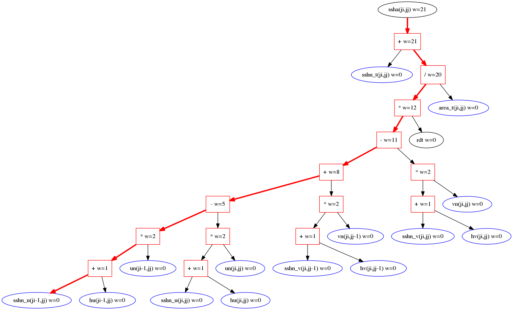

habakkuk
Fortran code analysis for performance prediction
Getting started
You will need the 'git' revision control system installed. You can then clone the repository to your local machine:
git clone https://github.com/arporter/habakkuk.git
You will then need to set your python path like so:
cd habakkuk
export PYTHONPATH=${PWD}/f2py_93:${PWD}/src
Having done this you should be all set to try the tool on some Fortran code. There are various examples in src/tests/test_files. The tool may be run like so:
cd habakkuk/src
python ./make_dag.py tests/test_files/triple_product.f90
You should then see output similar to the following:
Wrote DAG to test_triple_product.gv
Stats for DAG test_triple_product:
0 addition operators.
0 subtraction operators.
2 multiplication operators.
0 division operators.
0 fused multiply-adds.
2 FLOPs in total.
0 array references.
0 distinct cache-line references.
Did not find any array/memory references
Whole DAG in serial:
Sum of cost of all nodes = 2 (cycles)
2 FLOPs in 2 cycles => 1.0000*CLOCK_SPEED FLOPS
Everything in parallel to Critical path:
Critical path contains 4 nodes, 2 FLOPs and is 2 cycles long
FLOPS (ignoring memory accesses) = 1.0000*CLOCK_SPEED
Wrote DAG to test_triple_product_step0.gv
Wrote DAG to test_triple_product_step1.gv
Wrote DAG to test_triple_product_step2.gv
Schedule contains 2 steps:
0 * None (cost = 1)
1 * None (cost = 1)
Estimate using computed schedule:
Cost of schedule as a whole = 2 cycles
FLOPS from schedule (ignoring memory accesses) = 1.0000*CLOCK_SPEED
Estimate using perfect schedule:
Cost if all ops on different execution ports are perfectly overlapped = 2 cycles
e.g. at 3.85 GHz, these different estimates give (GFLOPS):
No ILP | Computed Schedule | Perfect Schedule | Critical path
3.85 | 3.85 | 3.85 | 3.85
No opportunities to fuse multiply-adds
The tool produces a Directed Acyclic Graph (DAG) for the body of the inner-most loop of every loop-nest it encounters. If a routine (or main program unit) contains no loops then a DAG is generated for the executable part of that routine. Each DAG is written to file in the dot language (e.g. test_triple_product.gv in the above example). If you have dot installed (part of the graphviz package) then you can process these files to produce an image of the DAG, e.g.:
cat triple_product_test.gv | dot -Tpng > triple.png